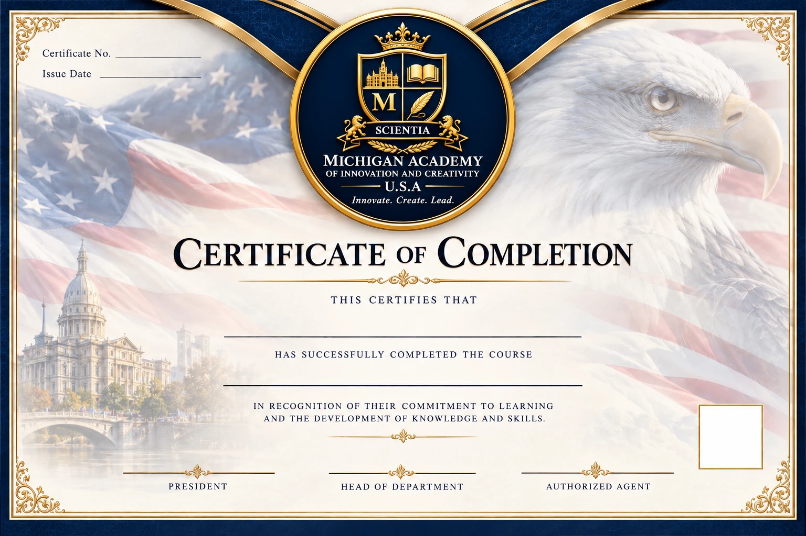

هذا هو التصميم الرسمي المعتمد لشهادة الإكمال. يظهر مربع QR فارغاً في القالب الأساسي، وتولّد الأكاديمية داخله رمز تحقق فريداً عند إصدار شهادة حقيقية. لا تُضاف بيانات متعلم أو توقيعات إلا بعد التحقق من الإكمال وموافقة الإدارة.
لإعداد نسخة PDF شخصية اضغط «إكمال الدورات والشهادات»، واختر شهادة صادرة؛ يمكن تنزيل مسودة بعلامة DRAFT أو إيداع النسخة الأصلية بعد تحميل التواقيع الثلاثة المصرح بها.